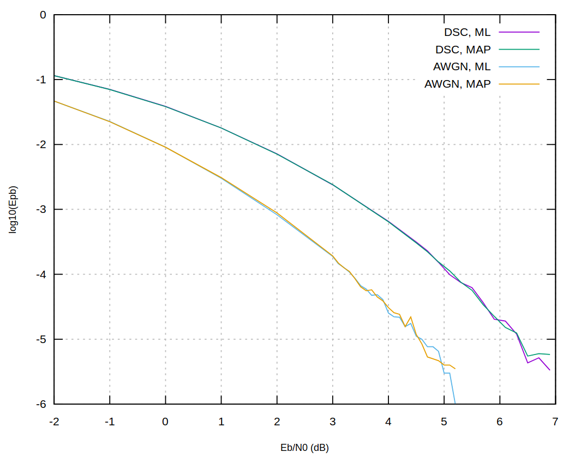

Теория информации, решения задач части 4,7,8
Table of Contents
1 Задание 4.2
Был написан код переборного декодирования по максимуму правдоподобия и максимуму апостериорной вероятности. Эксперимент имел входным параметром \(i\) – число итераций, код, задаваемый матрицей \(g\) (индивидуальная, из главы 2). Построение графика производилось следующим способом: выбиралось \(i\) случайных слов кода, для каждого слова \(w\) производилось кодирование (с помощью заданной модели канала) и декодирование (МАП или МВ), выдающее слово \(c\). Затем, считался вес разности \(|c + w|\) и прибавлялся к общему аккумулятору ошибок \(a\). В конце значение \(a\) делилось на суммарное количество (де)кодированных бит \(i * n\). Выборочные примеры кода приведены в приложении.
Получившийся результат:

Figure 1: Зависимость логарифма ошибки на бит от \(Eb/N0\) (дБ)
Отметим, что декодирование по МАВ не отличается от декодирования по МП, то есть все декодированые \(c+e\) имели одинаковое расстояние до оригинального \(c\) вне зависимости от декодера.
Энергетический выигрыш по сравнению с передачей информации без кодирования при ошибке \(10^{-5}\) составляет \(9.6 - 4.6 = 5\) дБ, то есть \(3.1\) раза для декодирования с мягкими решениями (АБГШ) и \(9.6 - 6.8 = 2.8\) дБ, то есть \(1.9\) раз для жестких решений (ДСК). Соответственно, по сравнению с асимптотами декодирования можем иметь энергетический выигрыш \(4.6+1.59=6.19\) дБ (\(4.14\) раз) для мягких и \(6.8-0.37=6.43\) дБ (\(4.4\) раза) для жестких решений.
2 Задание 4.4
Были написаны программы построения решеток (синдромной и через МСФ), полученные решетки для \(H\) (синдромная) и \(G\) (\(H\) интерпретированная как \(G\) для МСФ) представлены на изображениях:
Напомним, что матрица \(H\) имеет вид:
\begin{align*} H = \begin{pmatrix} 0 & 0 & 1 & 1 & 0 & 1 & 1 & 1 & 0 & 0 \\ 0 & 0 & 0 & 0 & 1 & 1 & 0 & 1 & 1 & 0 \\ 1 & 0 & 1 & 0 & 0 & 0 & 0 & 1 & 0 & 1 \\ 0 & 1 & 1 & 1 & 0 & 1 & 0 & 1 & 1 & 1 \end{pmatrix} \end{align*}
Figure 2: Решетка, построенная по проверочной матрице
Figure 3: Решетка, построенная по порождающей матрице
3 Задание 7.1
ЛРОС тривиально строится перебором для небольших значений длины заданной последовательности (практически показано, что перебором сложно искать ЛРОС начиная с размера 22). Генератор приведен в приложении.
Найденный ЛРОС имеет первоначальное состояние регистров \(110010\) и вектор мультипликаторов \(001101\). Первые 24 бита последовательности (12 заданых и 10 дополнительных): \(0100110001111001010110\).
4 Приложение
Декодер по максимуму правдобия, максимуму апостериорной вероятности.
-- | Maximum likelihood decoder. decodeML :: Channel -> [BVector] -> [Double] -> BVector decodeML chan codeWords y = fst $ maximumBy (comparing snd) $ map (\c -> (c,aPrioriProb c)) codeWords where aPrioriProb c = product $ map (uncurry chan) $ c `zip` y -- | Maximum a posterior probability decoder. decodeMaxAp :: Channel -> [BVector] -> [Double] -> BVector decodeMaxAp chan codeWords y = fst $ maximumBy (comparing snd) pcy where -- p(c|y) pcy = map (\c -> (c,pycMap M.! c * pc / py)) codeWords -- map c -> p(y|c) computePyc :: BVector -> Double computePyc c = product $ map (uncurry chan) $ c `zip` y pycMap = M.fromList $ map (\c -> (c,computePyc c)) codeWords -- p(y) py = sum $ map (\c -> pycMap M.! c * pc) codeWords -- p(c) pc = 1/(fromIntegral $ length codeWords)
Генератор ЛРОС для заданной последовательности.
-- | ЛРОС generator, first list is Λ_i, second list is S_i (initial). data LrosGen = LrosGen BVector BVector deriving Eq instance Show LrosGen where show (LrosGen a b) = "LrosGen " <> showVec a <> " " <> showVec b emulateLros :: LrosGen -> [Bool] emulateLros (LrosGen coeffs st) = do let curOut = unsafeLast st let pr = scalar coeffs st let newst = take (length st) $ pr : st curOut : emulateLros (LrosGen coeffs newst) genLros :: Integer -> BVector -> [LrosGen] genLros n v | n > (fromIntegral $ length v) = error "genLros: you don't want that, use naive lros" genLros n v = [LrosGen y initState | y <- binaryVectors n] where initState = reverse $ take (fromIntegral n) v findLros :: BVector -> IO LrosGen findLros vec = do go 2 where go n | n > (fromIntegral $ length vec) = error "There always exists naive lros" | otherwise = do putText $ "Iterating for " <> show n maybe (go $ n+1) pure $ find (\lr -> vec `isPrefixOf` emulateLros lr) $ genLros n vec task71 :: IO () task71 = do s <- findLros $ fromStrVec "010011000111" print s putStrLn $ showVec $ take 22 $ emulateLros s